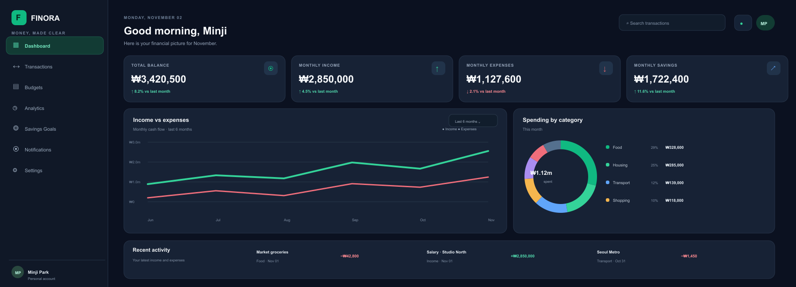

01
Record
Add income and expenses with a category, date, and payment method.
CAPTURE THE DETAILSA calmer way to understand your money. Track income, plan your spending, and make progress toward the things that matter.
FINORA brings everyday records and monthly plans together in one beginner-friendly workspace. No finance expertise required — just useful information, presented clearly.
Add income and expenses with a category, date, and payment method.
CAPTURE THE DETAILSSet monthly category limits and see how much of each budget remains.
MAKE A SIMPLE PLANReview cash flow, spending patterns, and savings-goal progress.
TURN DATA INTO INSIGHTPeople starting to budget deserve tools that feel simple, not intimidating.
A typical visit keeps the everyday money routine short and understandable.
A focused set of workspaces supports the everyday tasks of managing personal finances.
Balance, monthly income and expenses, budget progress, savings goals, and recent activity at a glance.
Add, edit, search, and filter income and expenses.
CAPTURE EVERYDAY ACTIVITY ↗Set category limits and watch spending progress.
STAY WITHIN YOUR PLAN ↗Compare cash flow and understand category trends.
FIND YOUR PATTERNS ↗Track targets, contributions, and progress over time.
MAKE PROGRESS VISIBLE ↗Manage personal details, currency, and account preferences.
MAKE IT YOURS ↗Also considered: Login · Registration · Notifications · About · Contact
The proposed interface places balance, cash flow, categories, and recent activity in one dark, focused workspace.

Prioritise the numbers people need most, then provide simple paths to transactions, budgets, and reports.
This browser-only concept demonstrates how a transaction could appear in a user's activity. It uses fictional sample data and does not connect to a bank or save to a server.
The proposed architecture separates the browser interface, server-side logic, and persistent data.
Example entities: USERS · TRANSACTIONS · BUDGETS
Even a classroom prototype should model careful handling of personal financial information.
Demo safety Use fictional sample data. Do not connect real bank accounts.
Each stage adds something concrete that can be shown, tested, and reviewed.
Requirements, page map, and wireframes.
HTML structure, CSS, and responsive layout.
Forms, validation, charts, and filters.
API routes, database, and authentication.
Fix issues, add sample data, and prepare the demonstration.
A short walkthrough can make the value of FINORA clear without overwhelming the audience.
Enter the demo account.
Save a sample expense and category.
Show the updated balance and chart.
Create a limit and show what remains.
Filter by month and explain the summary.
FINORA brings frontend development, backend APIs, database design, and practical user experience into one project.
Student ID · 202637470
Student ID · 202637018
Personal finance management, designed to make everyday decisions feel simpler.
QUESTIONS?